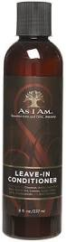
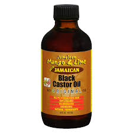
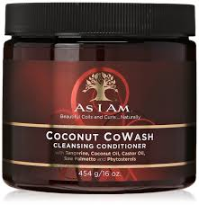

KAKKA'S KINKY HAIR
Home
Type 3 Hair
Type 3a
Type 3b
Type 3c
Type 4 Hair
Type 4a
Type 4b
Type 4c
Match Your Texture/Help
About Us
4c Type Hair
Hairstyles
Video Tutorials
Hair Products
As I Am Leave In Conditioner

Shea Moisture Raw Shea Retention Shampoo
Wild Hair Growth Oil
Jamaican Black Castor Oil

Shea Moisture Jamaican Black Castor Oil Strengthen and Restore Treatment Masque
Kinky Curly Knot Today Leave In Conditioner/ Detangler
As I am Coconut Cowash

As I AM Twist Defining Cream
Murray’s Edge Wax
Hair Tips
When you are wearing a protective style be sure to moisturize everyday to avoid excessive breakage.
Co-wash (conditioner-wash) once a week to build up the moisture in your hair.
Although shampoo can cause dryness in hair, it still important to shampoo your hair once or twice a month to remove build up.
Deep Conditioners truly help to seal in moisture.
Coating your hair with oil is important for people with 4c hair.
Good oils to use are Wild Growth Hair Oil, Jamaican Black Castor Oil, and The Mane Choice Ancient Egyptian Hair Oil
Limit detangling 4c hair to only once a week.
Use the LOC method( Liquid + Oil + Creme)
When washing your hair use lukewarm water instead of hot water.
Avoid using brushes, they tend to rip out your, if using a brush is necessary then use a boar bristle brush.